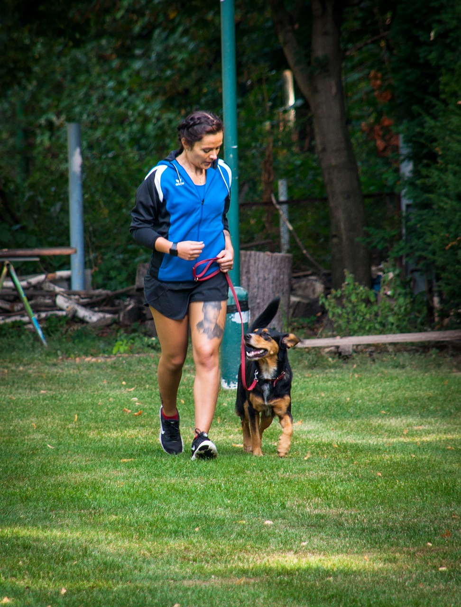
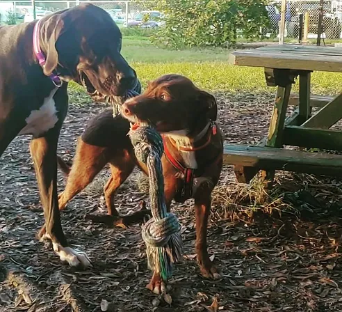
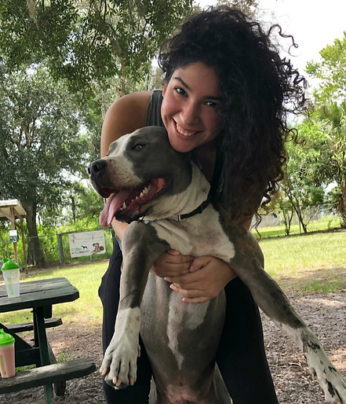

- Neutering/Spaying: All dogs must be neutered or spayed to enter the park.
- Behavior: Aggressive dogs are not allowed. Dogs must be removed at the first sign of over-aggressive behavior toward other dogs or humans.
- Collars: All dogs must wear a collar at all times. Choke or prong collars are not permitted.

- Vaccinations: Dogs must have a current license tag and be immunized against rabies, distemper, bordetella, and leptospirosis.
- Cleanliness: Dog waste must be picked up immediately and placed in provided containers. Disposal bags are available.
- Dog Limit: No more than three (3) dogs per handler per visit.

- Handler Presence: Handlers must remain in sight and voice control of their dog(s) at all times.
- Leash Rules: All dogs within the fenced area must be off-leash.
- Food and Drink: No food or alcoholic beverages are allowed.
- Children: Children under 16 must be under direct adult supervision.
- Environment: Any holes dug by your dog must be filled and covered immediately.
Thank you for helping us keep the sanctuary a safe, joyful space for every dog and every visitor.